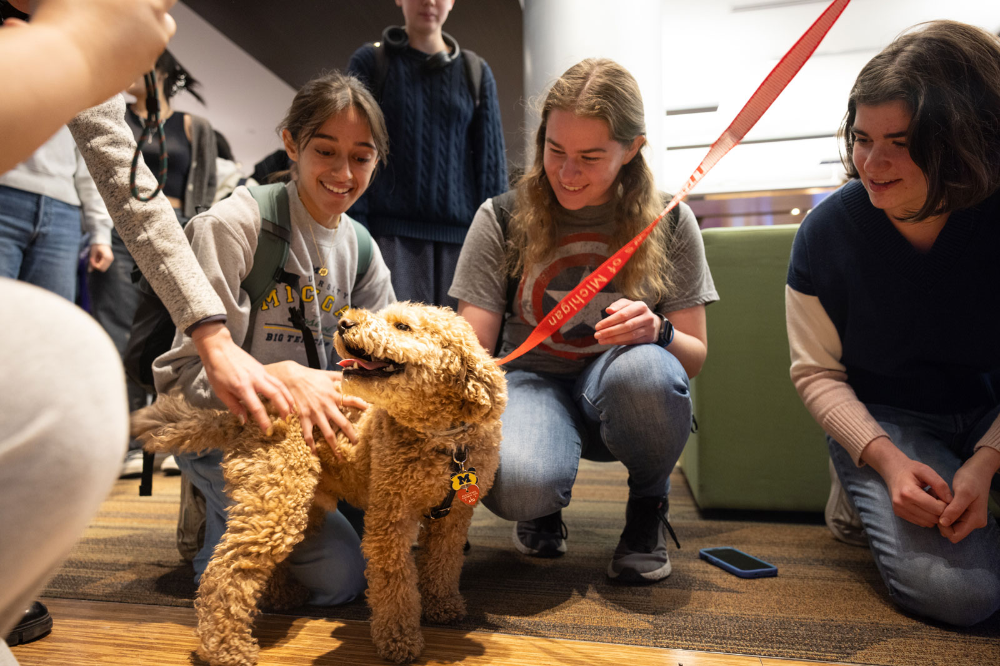

Your go-to source for student support and well-being services. Explore a variety of options designed to enhance your mental health and foster a thriving and positive campus community for yourself.
Counseling and Psychological Services (CAPS)
Counseling and Psychological Services (CAPS) provides a supportive environment through multicultural and multidisciplinary practices, offering accessible, quality mental health services to a diverse student body.
Wolverine Wellness
Wolverine Wellness enhances health and wellness through education and advocacy, focusing on social change, justice, and health equity by partnering with the campus community to create conditions that prioritize well-being and belonging for you.
CAPS Peer Counseling
The Individual Peer Counseling (IPC) program at the University of Michigan provides a supportive space for students to express themselves with trained peer counselors, though it does not replace professional therapy from licensed CAPS staff.

Explore the range of advising and academic resources available to undergraduate students at the University of Michigan, designed to support your educational journey and help you achieve your academic goals.
BSI Academic Advising
Schedule 1:1 appointments or drop-in sessions with our advisors to discuss course planning, degree requirements, policies, or other academic concerns.
UMSI Tutoring & Academic Support
Access tutoring and academic resources designed to support you and other UMSI students with their courses.
Michigan Library
Explore a vast collection of digital and physical resources, research tools, and personalized assistance through the U-M Library, featuring a comprehensive catalog for books, journals, media, and more. Discover inviting spaces across four main libraries, perfect for studying, collaboration, and quiet reflection.
Sweetland Center for Writing
The Sweetland Center for Writing at the University of Michigan provides comprehensive writing support through tutoring, workshops, writing guides, specialized courses, and peer consulting for undergraduate students, with resources for multilingual writers and faculty assistance.
Services for Students with Disabilities
Services for Students with Disabilities (SSD) at the University of Michigan provides accommodations and resources to ensure equal access to education, including support for exams, housing, and classroom accessibility, with a streamlined process through the new Accommodate system.
University of Michigan Undergraduate is more than just academics. It's important to cultivate a balanced life. Here are some resources to help you enjoy life outside the classroom:
Center for Campus Involvement
Will help you find the right student organizations events, and festivals on campus for you!
U of M Student Organizations
Connect with other students, learn new leadership skills, and find your community.
U of M Student Life
Get help with making Michigan home by offering opportunities to connect, get involved, and find housing, dining, and campus experiences that fit your needs.
U of M Events Calendar
Find out what events are happening at University of Michigan!
Intramural Sports
Sports are offered in various leagues in 3 divisions-competitive, recreational, or social—so you can choose your preferred level of play in a sport.